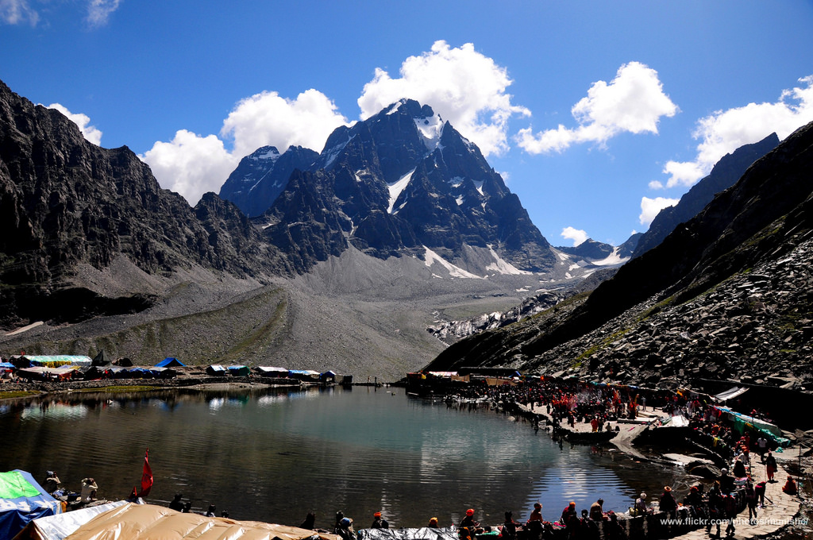

Introduction
Chamba is a town in the Chamba district in the state of Himachal Pradesh, in northern India. According to the 2001 Indian census the town is situated on the banks of the Ravi River (a major tributary of the Trans-Himalayan Indus River), at its confluence with the Sal River. Chambial were the Rulers of Chamba State [1] Chambials use suffix Varmans. Though historical records date the history of the Chamba region to the Kolian tribes in the 2nd century BC, the area was formally ruled by the Maru dynasty, starting with the Raju Maru from around 500 AD, ruling from the ancient capital of Bharmour, which is located 65 kilometres (40 mi) from the town of Chamba.[2] In 920, Raja Sahil Varman (or Raja Sahil Verma) shifted the capital of the kingdom to Chamba, following the specific request of his daughter Champavati , Who Further Adopted a Kid Named Pt.Shiv Kumar Upmanyu[3] (Chamba was named after her). From the time of Raju Maru, 67 Rajas of this dynasty ruled over Chamba until it finally merged with the Indian Union in April 1948, although Chamba was under British suzerainty from 1846 to this time.[2] The town has numerous temples and palaces,[3][4] and hosts two popular jatras (fairs), the "Suhi Mata Mela" and the "Minjar Mela", which last for several days of music and dancing. Chamba is also well noted for its arts and crafts, particularly its Pahari paintings, which originated in the Hill Kingdoms of North India between the 17th and 19th century, and its handicrafts and textiles.
Costumes
Ancient people of Chamba were known to have worn a fine woolen blanket or chadar around the waist, to keep warm in the cold climate. It was often tied or girdled with a band or patka, as evidenced by some archaeological discoveries in the area depicting this fashion. The Gaddi people have traditionally worn white embroidered caps and loose-fitting white woolen garments known as a chola, tied around the waist with a black wool rope. A local custom in Chamba was to give the Jogi of the Natha sect a cotton maikhal sheet to wear over the head during the Nuwala ceremony to honour Lord Siva. Chamba and the surrounding district have been well documented as being a producer of fine cloth and embroidered dresses for centuri "The Jakatas, the Milinda Panha and the Vinaya of the Mulasarvastivadins mention the beautifully embroidered Kotumbara clothes of the Audumbara country (Pathankot and Chamba) and the fine textiles captured in the lot of Kangra Fort in 1009 around the astonishment of the soldiers of Mahmud of Ghazni. A heavier, though not less luxurious type of embriodered dresses can be traced on the fountain stones, which had been erected by the local aristocracy of Churah, in western Chamba in the 11th to 12th centuries." - Hermann Goetz Given the history of migrants arriving in Chamba from across Kashmir and Tibet over the centuries, today Chamba has a variety of traditional dresses, defined by the region to which they belong. The most traditional dress worn by Hindu women, on special occasions, is the pashwaj. Pashwaj is a gown with a short bodice (blouse) covering up to the waist. A shirt is worn, below which the dress falls in many folds, nearly touching the ground. The typical casual dress though, however, is a pairahan, with a chadar or dupatta (stole) worn over the head. The lower half of the body is covered by a pyjama, known as a suthan. Muslim women also generally wear similar dresses as the Hindu women. However, the one difference is that the tunic they wear is considerably shorter, just touching the knee. They don a small vest called a angi, worn beneath the bodice. A small shirt or kurta is also common. Hindu men wear an angrakha, long tunic that touches the knees. A cloth waist-band and tight fitting pajama and a small pagri (top hat) worn on top of the head completes their ensemble.
Arts In Chamba
Chamba Miniature Paintings
Chamba is noted for its miniature Pahari paintings, where Basohli style of Pahari paintings took roots with Nikku, the artist of Basohli migrating from Guler to Chamba in the eighteenth century. Raja Udai Singh and Raja Jai Singh patronized this school of painting. During the reign of Raja Charhat Singh, folk art developed and had a lasting influence on local artists. The paintings of Chamba encompass both miniatures and murals and the Mughal influence is clearly discerned in these paintings. Distinguished artists of Chamba who have painted in this art form include Lehru, Durga and Miyan Jara Singh. The paintings were generally painted with Hindu religious themes, particularly the legends of Hindu mythology such as Radha Krishna, Shiva-Parvati, Rama Darbar, Yashoda and Krishna, Gopis, love scenes, deer, birds and women, Daya Saptashati and Krishna - Sudama. Romantic ambiance of the monsoon season in Chamba has also been painted by the artists of Pahari miniature art, in various moods and styles in Basholi colours. They are displayed in the museums at Chamba and also at Shimla and Dharamsala.
Handicrafts And Musical Instruments
Chamba is an important centre for the making of traditional handicrafts, and the town has numerous small workshops maintained by the artisans. Many of the items produced are exquisite and lavish, testament to the towns' aristocratic heritage. Casting metalware in Chamba is an ancient tradition, dating back to the Bronze Age period, with items typically made out of copper or brass, and also iron, especially in the traditional making of implements and weapons by blacksmiths. Of particular note in this trade are the large plaques with reliefs, commonly used for wall decoration. The temple cupolas in Chamba district are often furnished with copper and brass items made in Chamba and often the golden kalasha or vessel crowning them is produced here. Chamba has its own unique traditional system of men’s and women’s footwear. Traditional footwear was originally made from locally produced leather but is today transported to Chamba from the south of India. Women's footwear is embroidered as is "vegetarian" footwear which is purposefully made without leather for use in places where leather is prohibited for religious reasons. Handkerchiefs and shawls are also made in abundance in Chamba. Traditionally hand-spun, they are designed in such a way as to make both sides of the cloth look identical, and are beautifully embroidered. Chamba shawls are woven on hand looms in wool and typically have a bright border in a traditional design. A similar woven design is used for making caps.
Festivals, Fairs And Dances
Chamba is one of those places where Basohli effect actually reached. Two melas or fairs, also known as Jatras, are of particular note in Chamba; "Suhi Mata Mela" and "Minjar Mela". A notable event of such fairs is when the ‘chela’. a subordinate of the deity who is being worshipped goes into a trance and answers the queries and prayers of the devotees. An important festival held in Chamba is known as the "Suhi Mata Mela". It is held annually in March–April for four days to commemorate the sacrifice made by the queen of Chamba with her life, to bring water to the town. The legend associated with this festival and the Sui Mata temple, built in memory of the queen (wife of Raja Sahil Varman), relates to the sacrifice she made to fulfill a prophecy in a dream, which said that water from the Sarota stream could only be accessed through an aqueduct if the queen or her son was sacrificed. Rather than kill her own son she sacrificed her own life for the town. To commemorate this event, women and children take a lead role in the festival. An image of Champavati, with banners of the Rajput solar emblem, are taken by them in a procession, dancing and singing, through the Chaugan to the Suhi Mata temple.
Costumes
Ancient people of Chamba were known to have worn a fine woolen blanket or chadar around the waist, to keep warm in the cold climate. It was often tied or girdled with a band or patka, as evidenced by some archaeological discoveries in the area depicting this fashion.[54] The Gaddi people have traditionally worn white embroidered caps and loose-fitting white woolen garments known as a chola, tied around the waist with a black wool rope.[31] A local custom in Chamba was to give the Jogi of the Natha sect a cotton maikhal sheet to wear over the head during the Nuwala ceremony to honour Lord Siva. Chamba and the surrounding district have been well documented as being a producer of fine cloth and embroidered dresses for centuries.Given the history of migrants arriving in Chamba from across Kashmir and Tibet over the centuries, today Chamba has a variety of traditional dresses, defined by the region to which they belong. The most traditional dress worn by Hindu women, on special occasions, is the pashwaj. Pashwaj is a gown with a short bodice (blouse) covering up to the waist. A shirt is worn, below which the dress falls in many folds, nearly touching the ground. The typical casual dress though, however, is a pairahan, with a chadar or dupatta (stole) worn over the head. The lower half of the body is covered by a pyjama, known as a suthan.
Music of Chamba
Devotional songs known as 'Ainchali' are sung throughout the night. The 'Chella' is summoned who goes into a Tranceas soon as the sacrifices are referred to Lord Shiva. He is said to be possessed of the Lord himself. He answers the questions put to him by members of the family and their fri Chambyal (people of Chamba) enjoy the traditional folk music of their area. This consists of folk songs, dances and folklores and these are accompanied by various musical instruments. Their love for folk music is evident from their keen interest in folk music which is different from that of other regions. Folk songs of Gaddis can be categorized as marriage songs, festivity songs, love songs. Marriage Songs The theme of the marriage songs is mostly related to the selection of groom and the girl's wishes regarding it. The songs which are sung at the time of wedding ceremony are known as 'Charlai' and these songs depict that the relatives of the bride and groom seek the blessings from the God. Festivity Songs Chambyals celebrate many fairs and festivals with great pump and show. They sing many songs which are usually accompanied by folk dances. Major folk songs are - 'Sukart and Ghanihar', 'Kunjadi Malhar' during Minjar Mela, 'Ainchali' on Nuala, songs related to Baisakhi at the time of 'Basoa' and 'Kunjadi' songs of the rainy season are sung during Patroru festival. Love Songs These songs are of Shrinagar rasa. Mostly the feelings of separation, hard life of Gaddis, their social bindings and the tales of sacrifice, unsuccessful love etc. are depicted through these songs. Famous Love songs are, 'Kunju and Chanchlo', 'Phulmu and Ranjhu', 'Raja Gaddan' and 'Bhunku Gaddi' that are very popular among the city and the state.